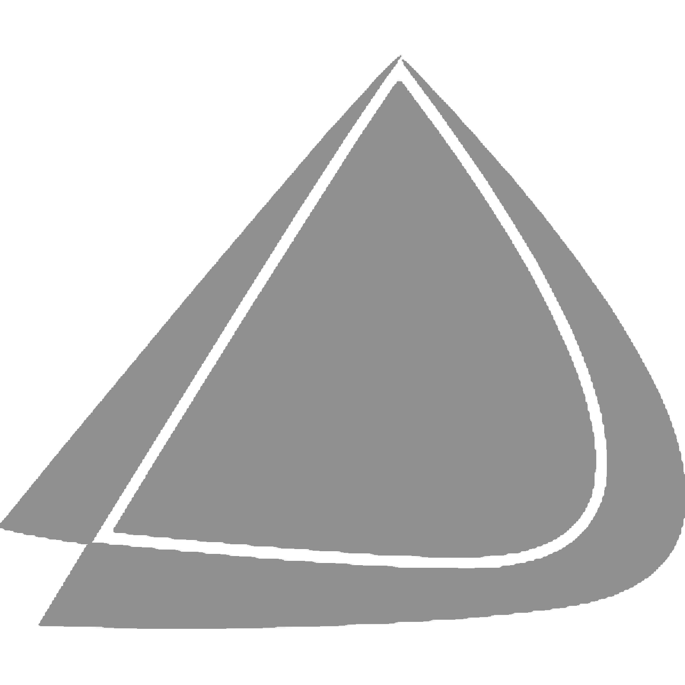
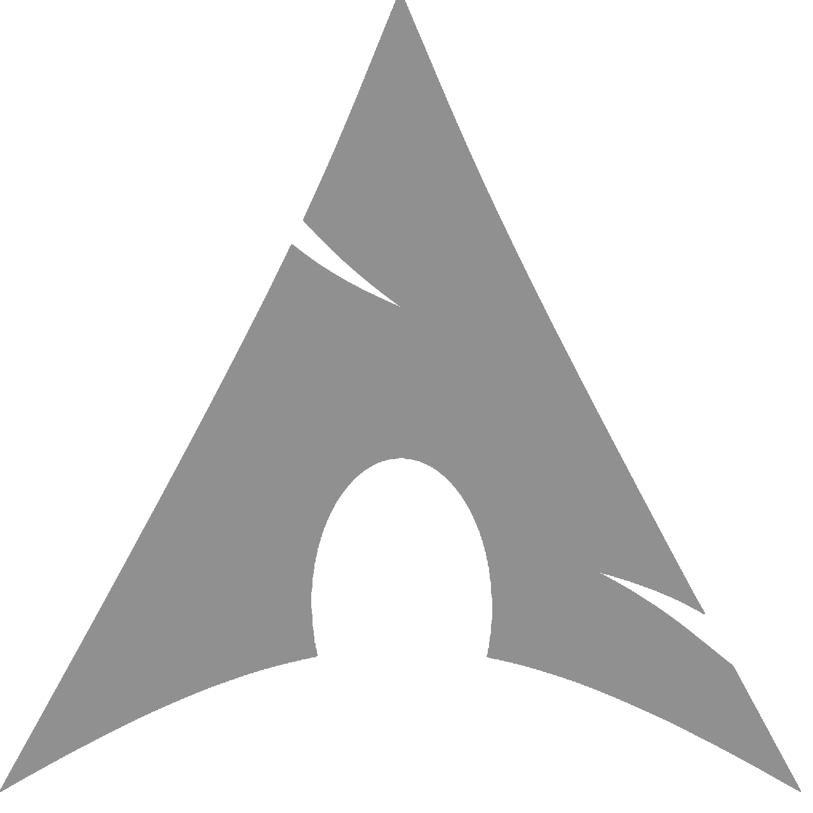

Primary workspace environment for structuring production architecture, tracking localized revisions, managing deployment states, and writing standard applications.


SAT
Reading and Writing
Evaluates evidence-based reasoning, linguistic precision, and comprehensive analysis of complex textual structures.
Mathematics
Assesses algorithmic proficiency, problem-solving logic, and advanced quantitative modeling capabilities.
YouTube Homepage
Recreated YouTube’s homepage interface with accurate structure and responsive styling.
Project Alpha
Deployment pending. Feature set involves experimental UI implementation and backend integration.
Beta Workspace
A conceptual workspace module designed to optimize local workflow productivity.
Archived Repo
Historical source code analysis and legacy system maintenance scripts.
System Script
Automated Linux kernel optimization tools for EndeavourOS systems.
Digital Tool
A modern utility tool crafted to bridge the gap between complex logic and simple UI.